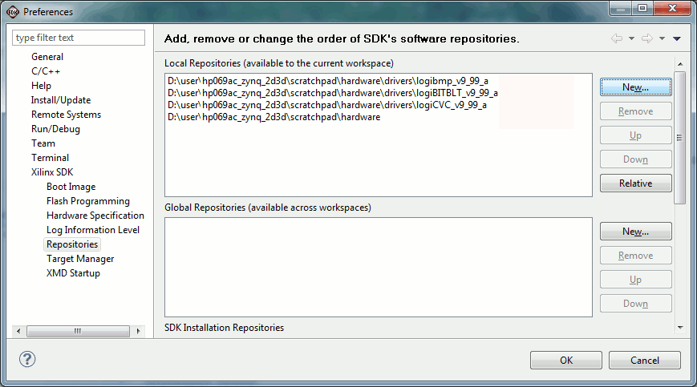
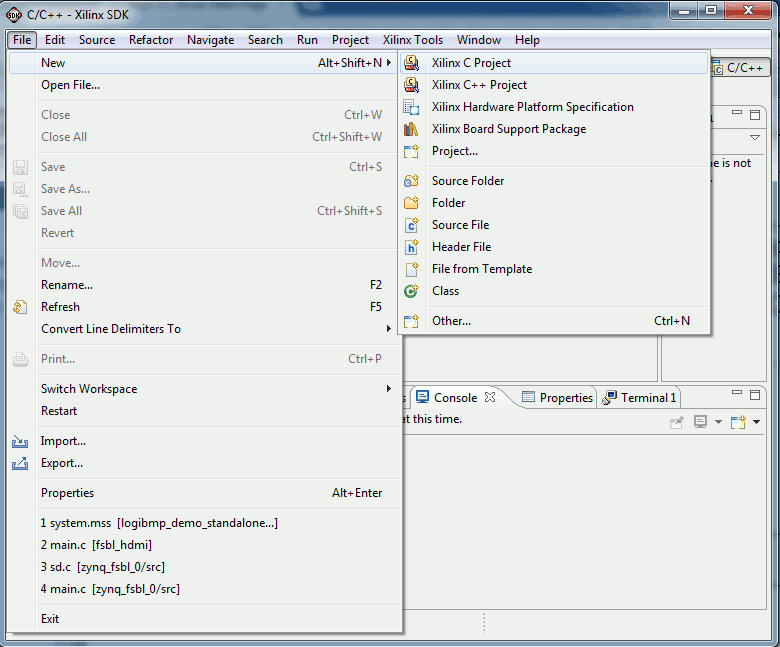
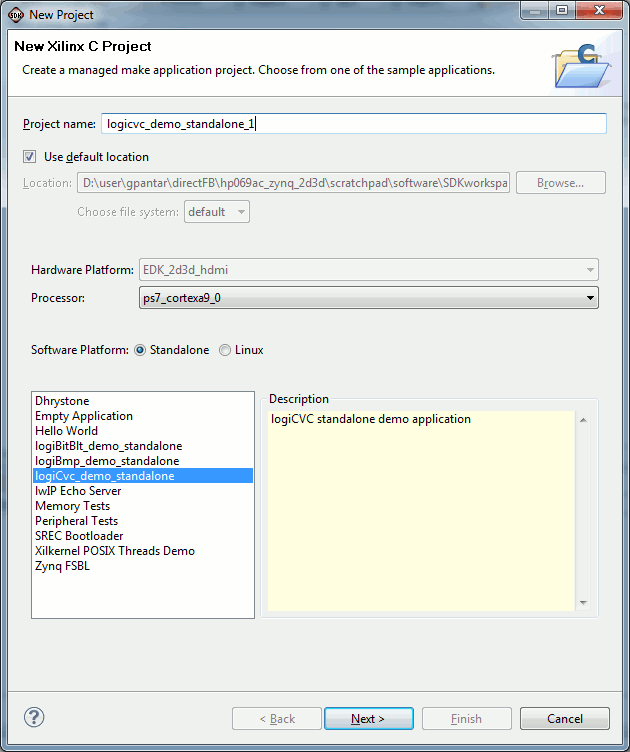
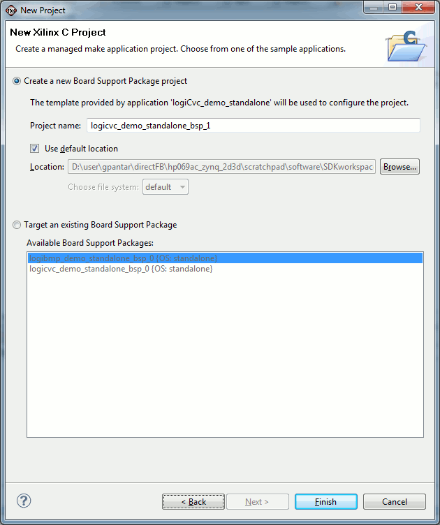
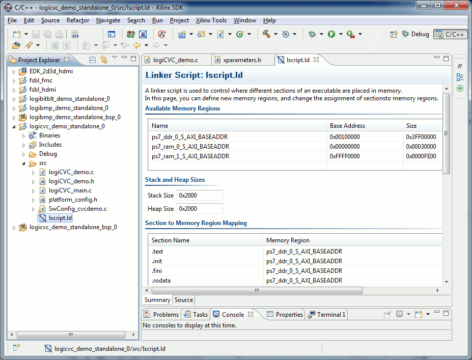
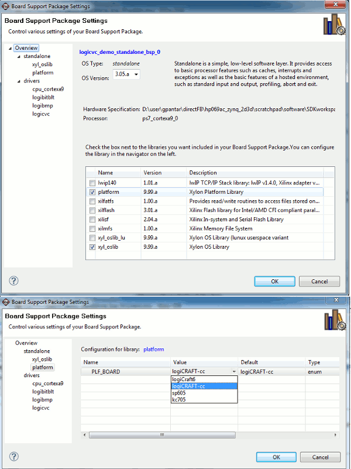

| 1. |
To be able to use the SDK driver
exampes templates you must add the PATH to the driver (e.g.
.../logiCVC_v3_04_a). You can add multiple driver paths to be able to
access driver example templates of more drivers. NOTE: see the path to ..\hardware, this is the path to all of Xylon driver/libraries and it is located two folder levels before the drivers folders NOTE: don't set the path to more then one version of the same drivers. |
|  | |
| 2. | To open a driver example project go to SDK->File->New->Other..->Xilinx C Project->"select project template" |
|  | |
| 3. | On the "New Xilinx C Project" window select the application template (e.g. logiCVC_demo_standalone). Optionally modify the targeted hardware platform and processor and modify the project name. Click Next. |
|  | |
| 4. | In this window you can create a new Board Support Package (BSP). This
is advisable since the new BSP will automatically contain all the
options and drivers selected. Optionally you can use existing BSP but then you must provide correct settings: - Xylon drivers typically require a xyl_oslib library to compile
|
|  | |
| 5. | The created project will be
added to the SDK and visible in the SDK project explorer. The example
sources will be copied in the SDK workspace folder and you will be able
to modify them without changing original driver example sources. OPTIONAL: Depending on your hardware settings (memory visible from the CPU and the FPGA IP core) you might need to modify the application project linker script. Following problems may occur when linker script is not suitable:
|
|  | |
| 6. | The Application/BSP that will be
automatically generated with the driver example template will not
contain any platform specific code. In some cases it is necessary to
provide initialization of some hardware circuits for the examples to
work properly. Typically this circuits are:
Xylon provides Platform library that is
designed to provide hardware abstraction for different development
boards. The Xylon Platform library supports several boards ( logiCraft-CC, SP605, KC705..
). If your target board is supported by the Platform library you can
include the Platform library in the referent BSP and configure the
platform library:
If all of the above steps are done and
the BSP compiles successfully the driver application code will use the
Platform library automatically.
|
|  |
Copyright © 2012 Xylon d.o.o. All rights reserved.